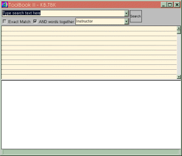
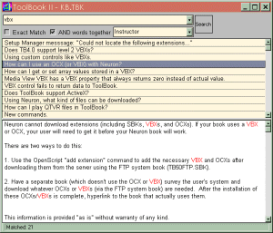
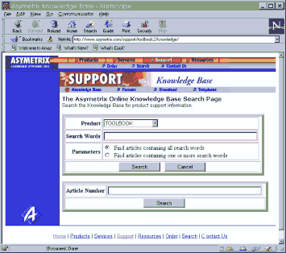
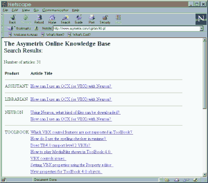
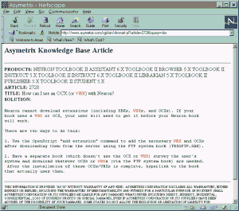

Australian Toolbook User Group


There are two flavours of knowledge base available for Toolbook. The Asymetrix knowledge base (online and downloadable) contains articles added by Asymterix tech support staff and Toolbook engineers.
The Independent Toolbook Knowledge Base is a huge database of Toolbook discussions that have occurred over the years 1994-1998 in both Asymetrix, Listserv and Compuserve forums.
The combination of the two knowledge bases should cover all your tech support needs - though, if you have a problem that nobody has run into before, you will need to post a question to one of the internet forums and wait for an answer.
Using the Asymetrix Knowledge Base
As well as the independent sources of Toolbook knowledge (built from the questions and answers of developers in the Toolbook community) described above, Asymetrix also maintains their own knowledge-base.
A Toolbook knowledge-base consist of tips on using Toolbook.
Asymetrix provides 2 forms of knowledge-base - a downloadable version and an online version. These are described above. which are described in more detail at the end of this article.
Asymetrix has updated its downloadable knowledge base. There are Assistant articles as well as entries on Toolbook 6.0. The zipped file is about 2.5 meg and the uncompressed files take up ~18 meg on your hard disk. To get the knowledgebase, point your browser at

ftp://ftp.asymetrix.com/pub/ToolBookII/samples/kb.exe

The online Asymetrix Web knowledge base
http://www.asymetrix.com/support/knowledge
is more current than the downloadable version and is updated daily. Asymetrix uses statistics from the Web knowledge base to help them collect data on what Toolbook Developers are looking for. Obviously, the downloadable version is very handy when you can't access the Web. Send any feedback directly to Rob Fink, Technical Support Manager, Asymetrix Learning Systems, Inc.
mailto:robf@asymetrix.com
The online version of the knowledge base looks like this:

and you simply type in the words you want to search for and you will see a search result page, whereupon you can click on any of the links you are interested in to get the piece of information itself:
You may also type in so called ‘article numbers’ which take you to a specific Asymetrix Knowledge Base Article. Sometimes these article numbers are referred to by Asymterix tech support, and provide a handy way of getting to a specific Toolbook tip.


Independent Toolbook Knowledge-Bases:
Whilst the Asymetrix knowledge base contains a lot of useful information, it is maintained soley by Asymetrix, and thus does not reflect everything that is going on in the Toolbook Developer Community.
The Independent Toolbook Knowledge Base contains all Toolbook discussions for the years 1994-1998. The newsgroups archived include the Asymetrix hosted public forums, plus the "Toolbook List" plus the older classic Compuserve forums. The Knowledge Base comes with a search engine. See
http://www.atug.com/nuggets.htm
You can try your hand on an internet search using Deja News, although this service will only pick up listserver discussions.
http://www.dejanews.com
 What about Compuserve Toolbook Forums?
What about Compuserve Toolbook Forums?
The Compuserve discussion group (WINAPA forum) used to be the official tech support forum for Asymetrix and thus provided many years of high quality answers and tips. It is defunct as of January 1997 - ever since Asymetrix moved their tech support to the Internet. You can still get these archives from
http://www.atug.com/nuggets.htm
To access thousands more tips offline - download Toolbook Knowledge Nuggets